Las principales opciones de configuración de Firefox se encuentran en la página de opciones, que está dividida en cinco secciones: General, Inicio, Buscar, Privacidad y Seguridad y Cuenta Firefox. Se comentan aquí algunas de esas opciones. También se comentan los dos tipos de zoom de que dispone Firefox y cómo elegirlo.
Página de opciones
La página de opciones se puede abrir de varias maneras:
mediante el menú Herramientas > Opciones (para mostrar el menú hay que pulsar la tecla Alt):
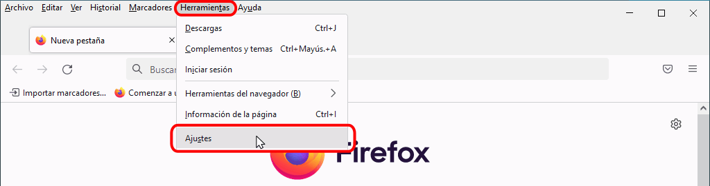
haciendo clic en el botón "Abrir menú" de la barra de dirección y eligiendo la opción Opciones:
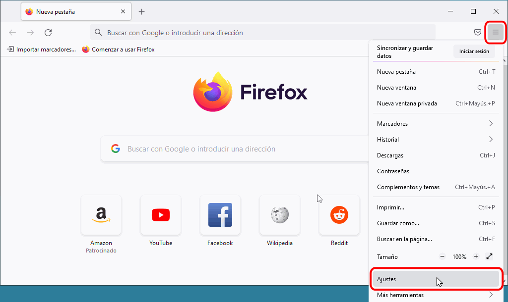
escribiendo en la barra de dirección la dirección about:preferences y pulsando Intro:
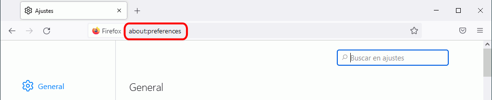
La página de opciones tiene cinco secciones que se abren haciendo clic en los iconos de la parte izquierda y que se comentan en los apartados siguientes de esta lección.
Opciones > General
En esta sección puede configurar,entre otras, los tipos de letra, la ubicación de la carpeta de descargas, las aplicaciones que gestionen los archivos descargados o algunas opciones de navegación.
Tipografía
Las hojas de estilo definen cinco familias de fuentes genéricas (serif, sans-serif, cursive, fantasy y monospace).
La opción General > Tipografía y colores permite especificar las fuentes correspondientes a las familias genéricas serif, sans-serif y monospace, que en Windows suelen ser, respectivamente, Times New Roman, Arial y Courier New. También permite especificar la fuente a utilizar cuando el documento no especifica ninguna fuente en particular.
Las opciones para configurar la fuente correspondiente a las familias genéricas cursive y fantasy se encuentran en la lección Configuración avanzada de Firefox.
Haga clic en "Tipografía predeterminada" para elegir la fuente o familia genérica a utilizar cuando el documento no especifica ninguna fuente en particular:
Haga clic en "Avanzadas" para elegir la fuente correspondiente a las familias genéricas serif, sans-serif y monospace:
A continuación seleccione la fuente deseada en la familia deseada:
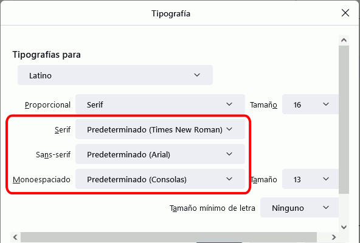
Descargas
En esta sección se puede elegir la carpeta en la que Firefox guarda los archivos descargados.
Aplicaciones
En esta sección se puede configurar qué programa gestiona cada tipo de archivo (programa externo, plug-in de Firefox o el propio Firefox).
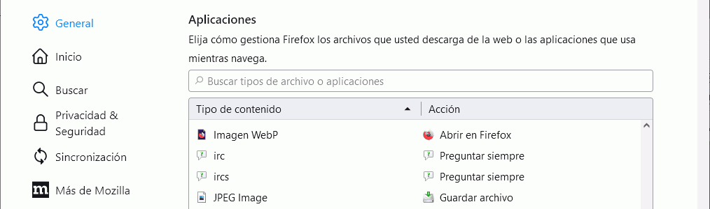
Por completar: Se podría añadir aquí cómo cambiar el visor de archivos PDF a Adobe Acrobat Reader.
Navegación
En este apartado, yo recomiendo cambiar dos opciones:
desmarcar la casilla "Usar desplazamiento automático", que funciona pulsando con el botón central en una página larga.
marcar la casilla "Buscar texto cuando comience a escribir", que efectúa automáticamente búsquedas en la página al teclear caracteres.
Opciones > Inicio
En este apartado se configura la página de inicio, que puede ser:
una página con varios componentes personalizables (llamada página de inicio de Firefox),
una o varias páginas concretas, elegidas por el usuario
simplemente una página en blanco.
Haga clic en la caja de lista "Página de inicio y ventanas nuevas" para elegir la opción deseada:
Contenido de la página de inicio de Firefox
La opción predeterminada de la página de inicio es la página de inicio de Firefox.
La página de inicio de Firefox está formada por varios elementos que se pueden ocultar o personalizar:
Nuevas ventanas y pestañas
Si quiere que la página de inicio sea una página determinada, elija la opción "URL personalizadas" y escriba la URL de la página deseada.
La forma más sencilla de configurar una página de inicio determinada es abrir primero la página en Firefox y a continuación abrir la página de opciones y hacer clic en el botón "Usar página actual" de esta sección.
Si se quiere configurar como página de inicio un conjunto de páginas abiertas en pestañas, el procedimiento es el mismo: abrir las páginas, abrir la página de opciones y hacer clic en el botón "Usar páginas actuales.
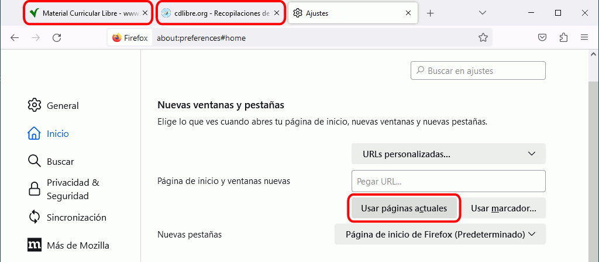
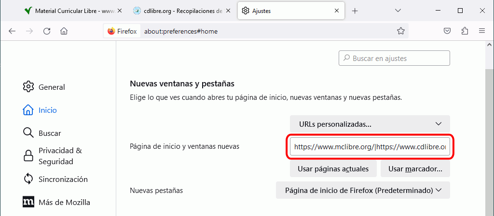
Opciones > Buscar
En esta sección puede modificar la integración de las barras de dirección y de búsqueda, el buscador predeterminado, modificar el orden de los buscadores o añadir o eliminar buscadores:
Buscadores en un clic
Firefox integra las barras de dirección y de búsqueda, por lo que al escribir una palabra en la barra de dirección se muestran las respuestas del buscador predeterminado (y páginas visitadas anteriormente, en su caso).
En la parte inferior se muestran los iconos de distintos buscadores para realizar una búsqueda en el buscador concreto que se elija.
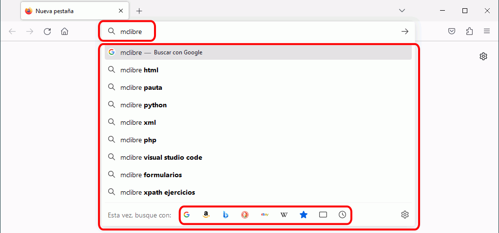
En esta sección puede eliminar alguno de los buscadores predefinidos o añadir otros buscadores.
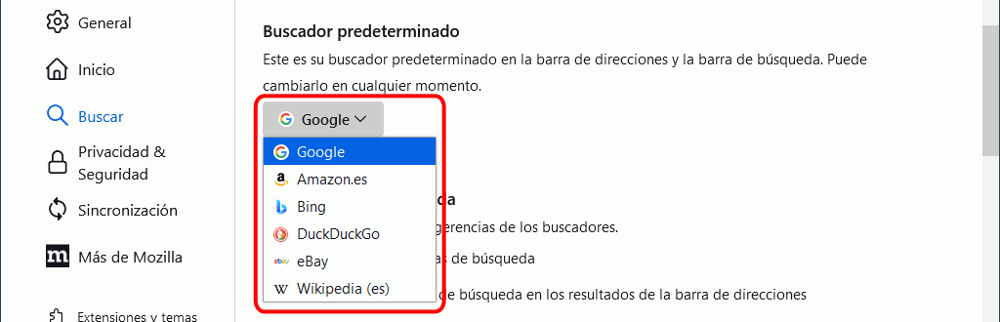
Opciones > Privacidad y Seguridad
En esta sección puede configurar, entre otras, el historial de páginas visitadas, el manejo de cookies y de datos privados, la protección contra el rastreo o la gestión de certificados de seguridad.
Historial
Las preferencias de Historial permiten indicar a Firefox la información que se conserva al cerrar Firefox (historial de navegación y descargas, sesiones activas, formularios, búsquedas, cookies, cachés, contraseñas, preferencias de los sitios, datos de sitios web sin conexión, etc.).
Para borrar el historial de navegación, haga clic en el botón "Limpiar historial...". A continuación elija exactamente qué datos quiere borrar y con qué antigüedad.
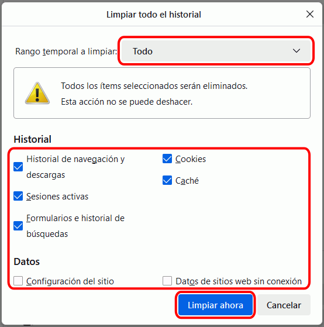
Protección contra rastreo
Las preferencias de rastreo indican a Firefox si informar a los sitios del deseo del usuario de no ser identificado mediante cookies. Se puede consultar más información sobre esta posibilidad, llamada Do Not Track, en la lección Historia de la web: otros.
Permisos
En esta sección se recomienda no desmarcar las casillas:
"Bloquear ventanas emergentes". Firefox no consigue bloquear todas las ventanas emergentes, pero sí gran parte de ellas. Extensiones como Adblock Plus mejoran Firefox en ese aspecto.
"Advertirle cuando los sitios web intentan instalar complementos", para evitar instalaciones "maliciosas".
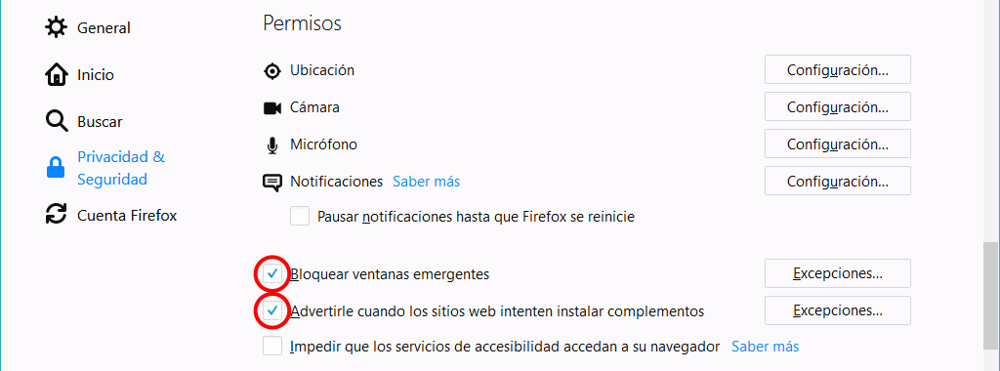
Opciones > Cuenta
En esta sección se configuran las opciones relacionadas con las cuentas de Firefox. Creando una cuenta en Firefox, se accede a varios servicios como sincronizar los marcadores, el historial de navegación, las contraseñas o las pestañas abiertas para utilizarlos en varios ordenadores.
Zoom
Para aumentar, reducir o devolver al tamaño original una página web, se puede:
Utilizar los atajos de teclado Ctrl++, Ctrl+- y Ctrl+0, respectivamente
Utilizar las opciones de menú Ver > Tamaño > Aumentar / Reducir / Inicio:
Pero hay que tener en cuenta que Firefox dispone de dos tipos de zoom:
Ampliar todo, que amplia o reduce proporcionalmente todos los elementos de la página (texto, imágenes, etc.)
Sólo ampliar texto, que amplia o reduce sólo el tamaño de letra sin modificar el resto de elementos (imágenes, etc.)
Para elegir entre un tipo u otro de zoom, hay que marcar o desmarcar la opción de menú Ver > Tamaño > Sólo ampliar texto:
El resultado es el siguiente:
Sin ampliar, la página se ve a su tamaño natural:
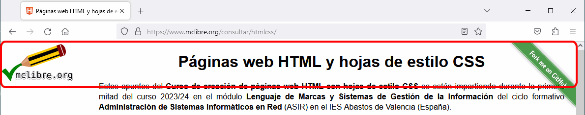
Si la opción Ampliar sólo texto sí está marcada, al ampliar se amplía el texto, pero la imagen conserva su tamaño:
Si la opción Ampliar sólo texto no está marcada, al ampliar se amplía tanto el texto como la imagen:
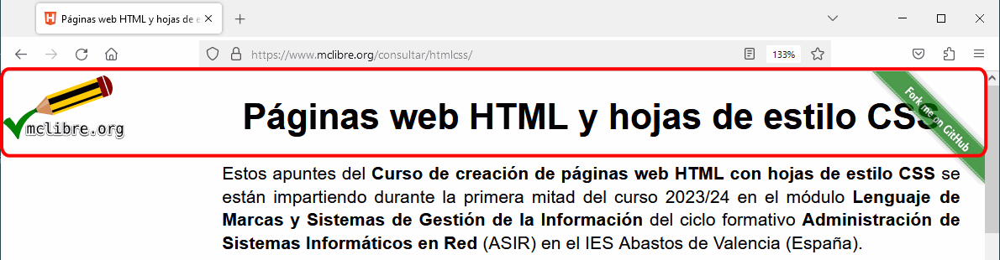
Nota: Este tipo de zoom es el que aplican Google Chrome y Microsoft Edge.